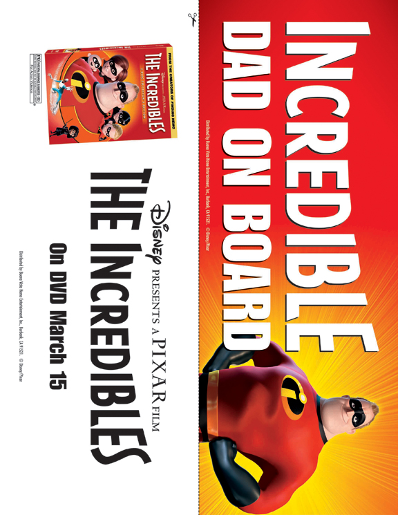
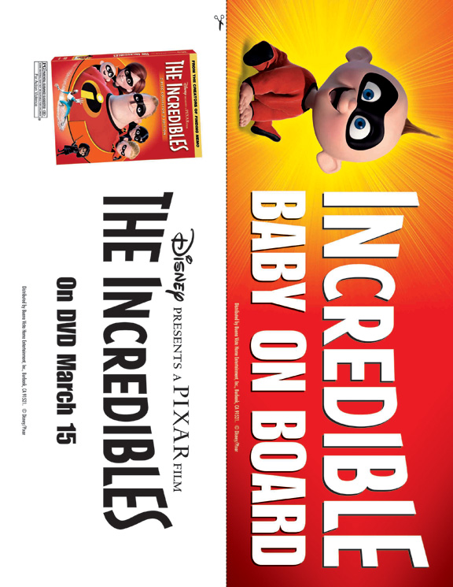
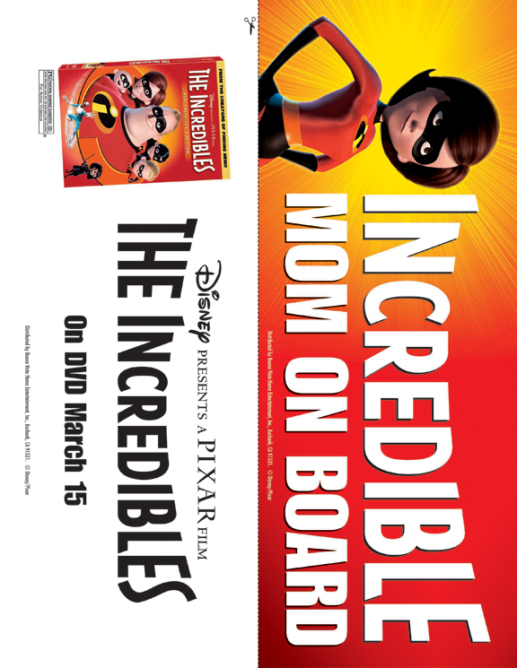
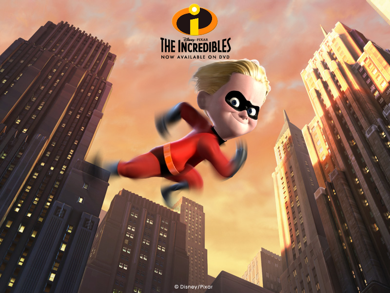

The Incredibles Extras

The Incredibles Bumper Stickers
Right click on the link of the size you want and click on the save/download image option to download it.



The Incredibles Screensaver

DOWNLOAD
 .exe file zipped (Windows) (2.01 MB)
.exe file zipped (Windows) (2.01 MB)
.sit file (Mac OS X) (1.76 MB)